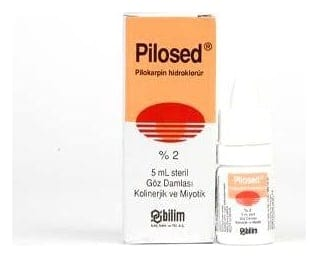

Pilosed % 2 Göz Damlası, Çözelti, 5 ml

Ne için kullanılır
KT · Bölüm 1PİLOSED % 2 göz damlası, çözelti, etkin madde olarak pilokarpin içeren, berrak ve renksiz çözelti halinde bir göz damlasıdır.
PİLOSED aşağıdaki durumlarda kullanılmaktadır;
Basit kronik (açık açılı) glokom (göz içi basıncının artması ile karakterize olan bir hastalık), Akut (kapalı açılı) glokom, İridektomiye (gözün bir bölümü olan irisin cerrahi olarak çıkarılması) bağlı kapalı açılı glokom, Sekonder glokom (üveite (göz küresi kabuğunun orta tabakasının iltihabına) bağlı olanlar hariç), Midriyatik (gözbebeğinin genişlemesini sağlayan) ve sikloplejik (yakın görmede görev alan göz kaslarını geçici felç eden) adı verilen bazı göz ilaçlarının etkilerini ortadan kaldırmak için.